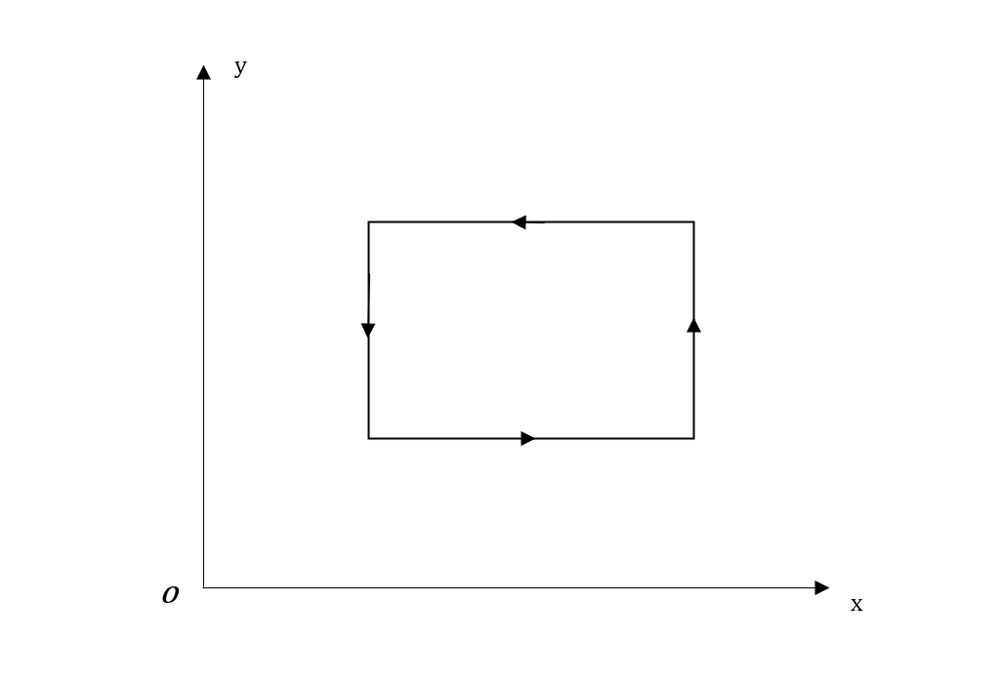
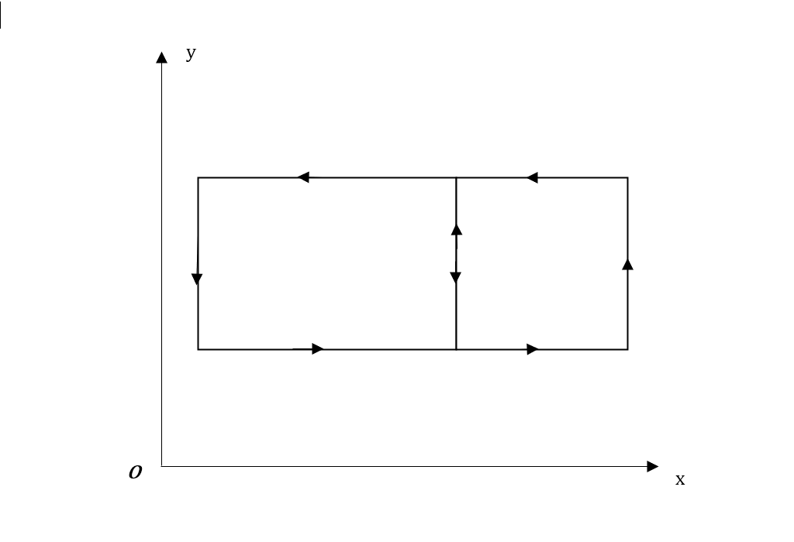
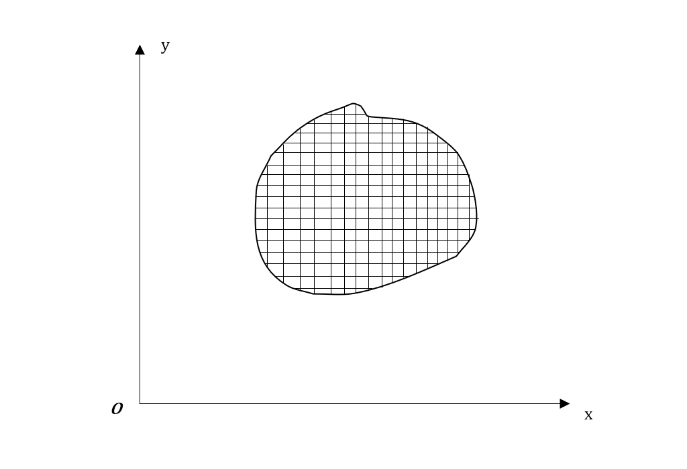
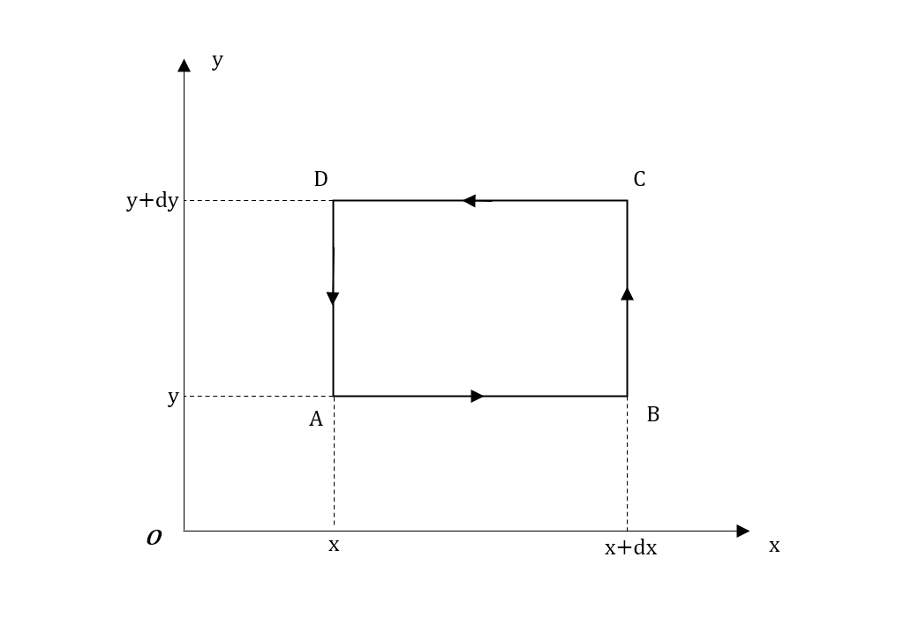
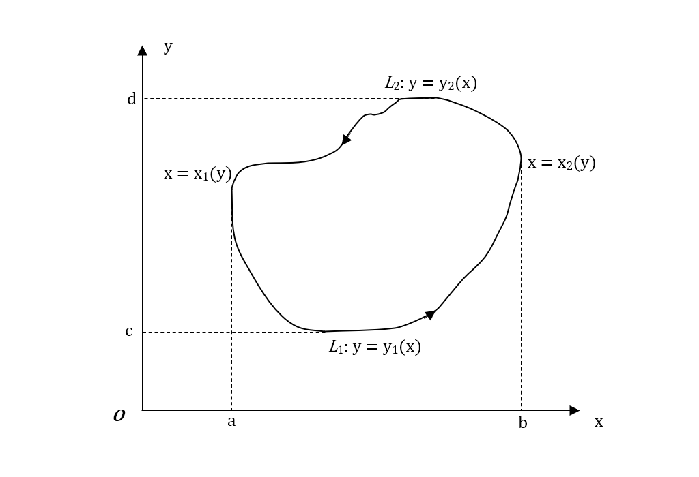
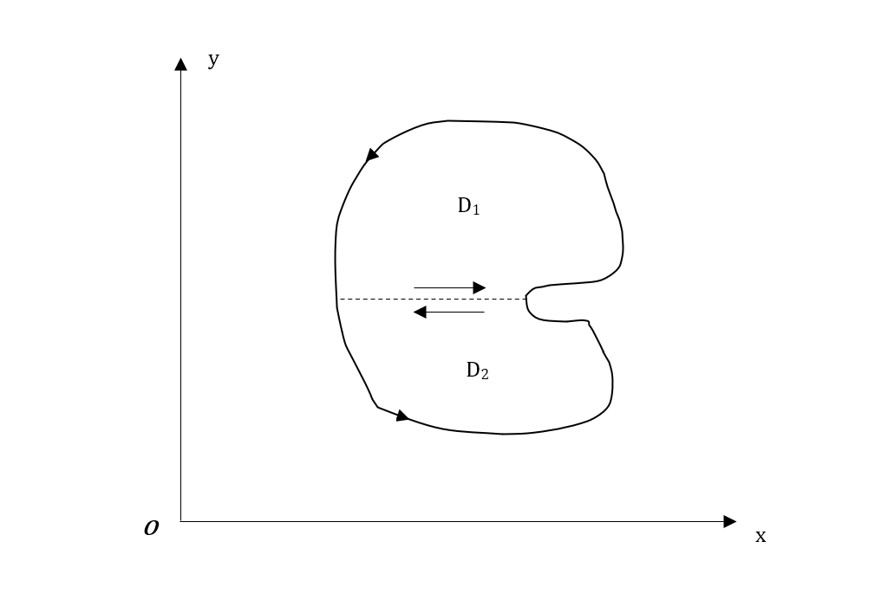

微积分基本定理的推广：格林公式的推导及其证明
学习背景
近来在学习多元向量值函数积分学的时候学习到了“微积分基本定理的推广”一章中的格林（Green）公式时，我在理解公式含义时遇到了困难。并且大部分资料里面也只给出了格林公式的证明，我也没查找到公式的推导。恰巧在知乎上看到一篇关于格林公式的回答（相关链接放在本文文末），收获颇深。于此拾人牙慧，将格林公式的推导和证明完整演绎一遍。
问题背景
在物理学研究中经常遇到这样的问题：一个矢量沿着一段曲线运动，求这个矢量在运动过程中的矢量积。比较经典的例子就是变力沿曲线做功问题。根据“先易后难”的研究思路，我们对于此问题的研究限定在平面内的变力和封闭曲线。本来对于这个问题我们的思路是十分清晰的：将封闭曲线细分为无数个小段，确定变力F在每个小段的向量值，作内积，求和取极限（或者说在整个曲线上进行积分）就可以了。这是单纯地从微积分基本思想来认识这个问题的。虽然看起来理论上可行，但实际操作的时候，我们很容易遇到难题：这个曲线能不能用方程表示出来？每一小段和变力的夹角如何？等等。
公式的推导
我们今天的主角乔治·格林（George Green）爵士在十九世纪初期时也在思考这个问题。如何求变力沿着封闭平面曲线内做的功？格林爵士深谙研究“先易后难”的方法，因此他首先考虑简单的封闭平面曲线：矩形。

先研究变力沿着此矩形在逆时针方向上的做功，很显然，只需将矩形分为四段，每段对应变力的分量，进行一元积分即可。
然后我们的格林爵士跨出了重要一步，他把两个矩形拼在了一起：

也许我们还看不出来这一步如何重要，但若仔细思考，我们会发现：在两个矩形重合的那条边上，由于变力F是x和y的二元变量，F在这条边上两个方向的做功和为零。也就说当两个矩形拼接在一起时，它们重合的边就可以忽略了。
也许我们的格林爵士写到这里的时候就情不自禁地笑出了声。
为什么？
我们本来是要求一个曲线积分，但经过格林爵士的捣鼓过后，就变成了这样：

如果你熟悉微积分教材的话，应该就能一眼看出来这是大多数教科书推导二重积分的例图。
先别急着下结论。我们本来的想法是把封闭曲线分成无数小段来进行积分，现在我们的格林爵士把封闭曲线围城的区域D分成无数个小矩形，这些小矩形内部重合部分积分为零，因此所有小矩形的积分就是小矩形们最外围的近似的原曲线的积分。
这样一来，我们就可以窥见封闭曲线的积分和封闭平面区域的积分有着某种关系。
有了这样的微分矩形，我们就可以着手开始计算了。

如图我们任取一个微分矩形。不妨设变力F在A,B,C,D四点的大小为：
$$ F_A = (P(x, y), Q(x, y)) $$ $$ F_B = (P(x + dx, y), Q(x + dx, y)) $$ $$ F_C = (P(x + dx, y + dy), Q(x + dx, y + dy)) $$ $$ F_D = (P(x, y + dy), Q(x, y + dy)) $$
根据力做功，我们可以求出变力F在各边上做的功：
$$ W_{AB} = P(x, y)dx $$ $$ W_{BC} = Q(x + dx, y)dy $$ $$ W_{CD} = P(x + dx, y + dy)dx $$ $$ W_{DA} = Q(x, y + dy)dy $$ $$ W_{ABCDA} = P(x, y)dx + Q(x + dx, y)dy + P(x + dx, y + dy)dx + Q(x, y + dy)dy $$
由于微分矩形足够小，我们不妨认为力沿着边移动时大小不变，于是上面的式子可以改写为：
$$ W_{AB} = P(x, y)dx（不变） $$ $$ W_{BC} = Q(x + dx, y)dy（不变） $$ $$ W_{CD} = -W_{DC} = -P(x, y + dy)dx $$ $$ W_{DA} = -W_{AD} = Q(x, y)dy $$ $$ W_{ABCDA} = P(x, y)dx + Q(x + dx, y)dy - P(x, y + dy)dx - Q(x, y)dy $$ $$ = - \frac{\partial P(x, y)}{\partial y}dydx + \frac{\partial Q(x, y)}{\partial x}dxdy $$ $$ = (\frac{\partial Q(x, y)}{\partial x} - \frac{\partial P(x, y)}{\partial y})dxdy $$
这就是变力在微分矩阵上的做功微元。接下来只需求和取极限（或者说是积分）就可以得到格林公式了。于是我们的格林爵士写下了这一千古绝笔：
$$ \oint_L Pdx + Qdy = \iint_D (\frac{\partial Q}{\partial x} - \frac{\partial P}{\partial y})dxdy $$
公式的证明
公式虽然给出来了，但没有严格的证明它就算不上是真正的公式。关于本公式的证明已有很多，此处引用我所用的教科书上的证明。
证明：
(1)D为单连通区域, 先证D可同时表示为以下两种形式:
$$ D = \lbrace (x, y) | y_1(x) \leq y \leq y_2(x), a \leq x \leq b \rbrace $$ $$ = \lbrace (x, y) | x_1(y) \leq x \leq x_2(y), c \leq y \leq d \rbrace $$的情形(这时平行于x轴或y轴的直线与区域D的边界至多相交于两点), 这样的区域称为标准区域, 如图

在这种情况下, 由二重积分的计算法有
$$ \iint_D (-\frac{\partial P}{\partial y})dxdy $$ $$ = \int_a^b dx \int_{y_1(x)}^{y_2(x)} (-\frac{\partial P}{\partial y})dy $$ $$ \int_a^b \lbrace P[x, y_1(x)]dx - P[x, y_2(x)]dx $$ $$ \int_a^b P[x, y_1(x)]dx + \int_b^a P[x, y_2(x)]dx $$另一方面, 由第二类曲线积分的性质及计算法有
$$ \oint_L P(x, y)dx = \int_{L_1} P(x, y)dx + \int_{L_2} P(x, y)dx $$ $$ = \int_a^b P[x, y_1(x)]dx + \int_b^a P[x, y_2(x)]dx $$故
$$ \iint_D (-\frac{\partial P}{\partial y})dxdy = \oint_L P(x, y)dx $$类似地, 将D表示为
$$ \iint_D \frac{\partial Q}{\partial x}dxdy = \oint_L Q(x, y)dy $$这样就得到格林公式
$$ \iint_D (\frac{\partial Q}{\partial x} - \frac{\partial P}{\partial y})dxdy = \oint_L Pdx + Qdy $$若区域D不是标准区域, 我们只考虑如图所示的区域:

在该区域上, 平行于y轴的直线与D的边界的交点可能会多于两个. 现用辅助线(光滑曲线)将D分成两个标准区域D1与D2, 这时对D1与D2可分别应用格林公式. 将两个公式加起来, 由于辅助线为两区域的公共边界, 在公式中取向相反, 故它们所对应的曲线积分相互抵消, 因此格林公式仍然成立.
(2)D为复连通区域. 用辅助线(光滑曲线)将外边界曲线L1上一点M与内边界曲线L2上一点N联结起来, D就变为单连通区域, 如图:

这样就可以应用格林公式, 沿其正向边界积分, 得
$$ \iint_D (\frac{\partial Q}{\partial x} - \frac{\partial P}{\partial y})dxdy = (\oint_{L_1} + \int_{MN} + \oint_{L_2} + \int_{NM})Pdx + Qdy $$ $$ = \oint_{L_1}Pdx + Qdy + \int_{L_2} Pdx + Qdy $$其中外边界曲线L1取正向为逆时针方向, 内边界曲线L2取正向为顺时针方向. 同时格林公式还可以通过类似方法推广到有有限个”洞”的复连通区域上.
故格林公式$$ \iint_D (\frac{\partial Q}{\partial x} - \frac{\partial P}{\partial y})dxdy = \oint_L Pdx + Qdy $$成立.
证毕.
小结
由格林公式的推导我们可以看到平面内封闭曲线和其围成的区域之间的关系。我们可以用连通区域的边界情况了解连通区域本身的情况。因此格林公式建立了平面封闭曲线积分到连通区域二重积分的桥梁。
这就好比认识一个人，自我介绍并不能解决问题，要深入了解这个人就必须从他或她身边的事物开始认识，比如他或她的人际关系、做事风格和举止谈吐等等。这不禁让我想起很久以前看到的“颜回偷食”的典故：
孔子穷乎陈、蔡之间，藜羹不斟，七日不尝粒，昼寝。颜回索米，得而焚之，几熟。孔子望见颜回攫取其甑中而食之。选间，食熟，谒孔子而进食。孔子佯为不见之。孔子起曰：“今者梦见先君，食洁而后馈。”颜回对曰：“不可。向者煤室入甑中，弃食不详，回攫而饭之。”孔子曰：“所信者目也，而目犹不可信；所恃者心也，而心犹不足恃。弟子记之，知人固不易矣。”孔子穷乎陈、蔡之间，藜羹不斟，七日不尝粒，昼寝。颜回索米，得而焚之，几熟。孔子望见颜回攫取其甑中而食之。选间，食熟，谒孔子而进食。孔子佯为不见之。孔子起曰：“今者梦见先君，食洁而后馈。”颜回对曰：“不可。向者煤室入甑中，弃食不详，回攫而饭之。”孔子曰：“所信者目也，而目犹不可信；所恃者心也，而心犹不足恃。弟子记之，知人固不易矣。”（《孔子家语》卷五“困厄”第二十）
孔子素日识回，认为颜回值得信任。但亲眼看见颜回偷食，孔子产生了动摇。何也？全面认识一个人很难做到，何况身为他人的人想要了解另一个人更加困难。孔子仅从一个“微分矩阵”就想看见颜回这一整个“第二类封闭平面曲线积分”，难免会有出入。他平日所见的颜回则是从各个“微分矩阵”来看的，所以相对较为全面，信任了颜回。
我们认识的不管是人还是事物，都很难面面俱到，因为我们的观察是离散的，没有办法像积分一样全面认识，尽管如果能全面观察事物的外围就能看到本质。但我们能做的就是尽可能多地从不同角度认识它，力求让自己的观察“可积”。
参考文献
[1] 格林公式的几何意义是什么？[EB/OL].https://www.zhihu.com/answer/165988374/
[2] 电子科技大学数学科学学院.微积分.下册[M].北京:高等教育出版社出版社,2019. 173-175
*本页插画引用自画师mocha，画师url:https://www.pixiv.net/users/648285/